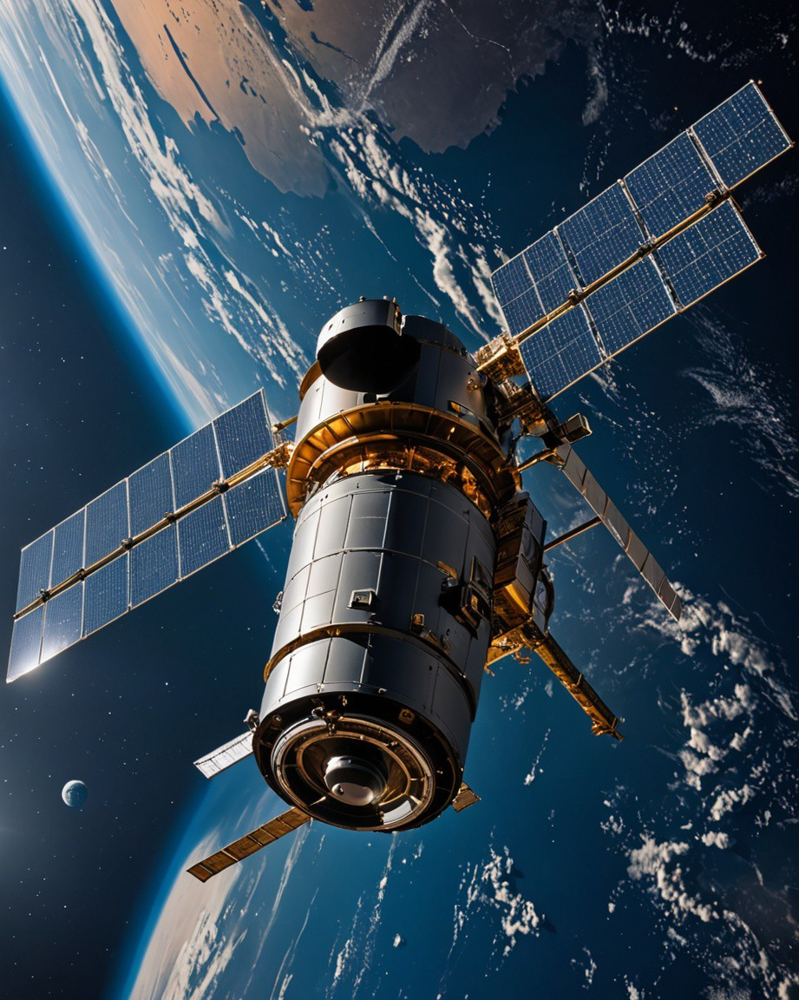
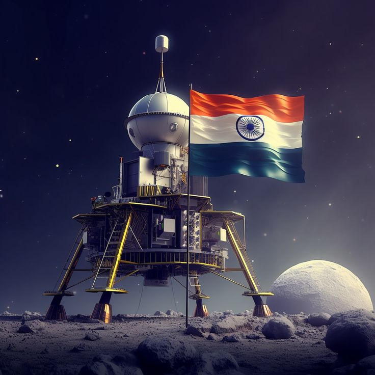

1. Chandrayaan-3: India’s Historic Lunar Mission Overview
Chandrayaan-3 is the third lunar exploration mission by the Indian Space Research Organisation (ISRO). It marked a monumental achievement for India by successfully landing near the Moon’s south pole, making India the first country to do so and the fourth overall to achieve a lunar soft landing.
⦁ Launch Date: July 14, 2023
⦁ Landing Date: August 23, 2023
⦁ Launch Vehicle: GSLV Mk III (LVM-3)
⦁ Mission Duration: Approximately 14 Earth days (one lunar day for surface operations)
⦁ Budget: Around ₹615 crore (~$75 million)
2. Mission Objectives
Demonstrating Safe and Soft Landing: Achieving a controlled descent and landing on the Moon’s surface. Rover Mobility: Ensuring the rover’s deployment and surface exploration. Scientific Experiments: Conducting in-situ analysis of the lunar surface to study soil composition, mineralogy, and elemental distribution. Key Components.
2. Lander (Vikram):
Equipped with advanced navigation, hazard detection, and propulsion systems to ensure a safe landing.
⦁ Instruments:
⦁ Instruments:
⦁ Rover Deployment Mechanism: Deployed the Pragyan rover.
⦁ Chandra’s Surface Thermophysical Experiment (ChaSTE): Measured thermal properties of the lunar surface.
⦁ Instrument for Lunar Seismic Activity (ILSA): Detected moonquakes and vibrations.
⦁ Langmuir Probe (LP): Studied plasma density near the lunar surface.
Rover (Pragyan):
A six-wheeled, solar-powered vehicle designed for mobility and surface analysis.⦁ Instruments:
⦁ Laser-Induced Breakdown Spectroscope (LIBS): Analyzed the elemental composition of lunar soil.
⦁ Alpha Particle X-ray Spectrometer (APXS): Measured the presence of key elements like magnesium, aluminum, silicon, and sulfur.
Mission Highlights
Landing Achievement: Chandrayaan-3 landed near the Moon’s south pole (69.37°S, 32.35°E), a region of high scientific interest due to the presence of permanently shadowed craters potentially containing water ice.⦁ The mission overcame challenges faced during Chandrayaan-2, such as improved algorithms for navigation and hazard detection.
Scientific Discoveries:
Sulfur Detection: Confirmed sulfur’s presence on the Moon’s surface, alongside other elements like oxygen, iron, and calcium.
⦁ Thermal Measurements: Provided data on temperature variations beneath the lunar surface, aiding in understanding the Moon’s thermal properties.
Technological Innovations:
Enhanced landing legs and shock absorption systems to ensure a stable touchdown.
⦁ Precision guidance and control mechanisms refined for lunar terrain.
3. Challenges and Solutions

⦁ Challenge: Building upon the failed landing attempt of Chandrayaan-2.
⦁ Solution: Redesigned software for better trajectory control and improved hazard avoidance systems.
⦁ Challenge: Extreme lunar conditions.
⦁ Solution: Ensured optimal thermal insulation and power management using solar panels.
Global Impact
⦁ Chandrayaan-3 positioned India as a key player in space exploration.
⦁ Demonstrated ISRO’s capability to achieve complex interplanetary missions on a modest budget.
⦁ Opened avenues for international collaborations in lunar research and technology sharing.
Future Prospects

⦁ ISRO aims to leverage Chandrayaan-3’s success for upcoming missions like Gaganyaan (human spaceflight) and Aditya-L1 (solar exploration).
⦁ Insights from this mission will contribute to planning future lunar habitats and resource utilization, including mining for water ice and minerals.
Conclusion Chandrayaan-3 is a testament to India’s growing prowess in space exploration. It not only fulfilled its mission objectives but also inspired millions by showcasing India’s potential to achieve remarkable feats in science and technology.